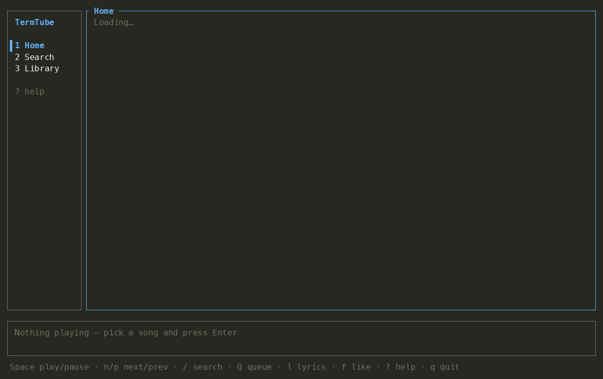

TermTube · free & open source
A lightweight YouTube Music client for your terminal
Your YouTube Music library, liked songs, recommendations, radio and lyrics on Linux and macOS — using ~50 MB of RAM instead of the 500 MB of the desktop app or a browser tab.

YouTube Music, without the memory hog
| YouTube Music app / browser | TermTube | |
|---|---|---|
| RAM while playing | 460–600 MB | ~50 MB |
| Your library, likes & recommendations | ✓ | ✓ same account |
| Keyboard-only, works over SSH / tmux | ✗ | ✓ |
| Install | Electron app or browser | One file (AppImage) or app |
Everything you use in YouTube Music
Home & search
Quick picks, mixes and listen again. Search songs, albums, artists and playlists.
Your library
Your playlists and Liked music, with a ♥ on liked songs everywhere.
Radio
Play any song and the queue keeps going with similar music, like “up next”.
Likes & history
Like songs with one key; plays count in your history so recommendations keep learning.
Lyrics & queue
Lyrics panel, reorderable queue, shuffle and repeat, seek and volume.
Instant playback
The next song is prepared while the current one plays. Audio by mpv, with media keys.
Get started
Linux — nothing else to install:
chmod +x termtube-x86_64.AppImage ./termtube-x86_64.AppImage
macOS — install the audio player and open the app from the .dmg:
brew install mpv yt-dlp
On first launch TermTube finds your YouTube Music session in any installed browser (Firefox, Chrome, Chromium, Brave, Edge, Safari…). If you are not signed in, it opens music.youtube.com and waits for you. Press ? inside the app for all keys.
FAQ
Is there a lightweight YouTube Music app for Linux?
Yes — TermTube runs in the terminal on Linux (AppImage for x86_64 and ARM64) using about 50 MB of RAM, with your library, likes, radio and lyrics.
Does it use my YouTube Music account?
Yes. It reads your session from a browser where you are signed in to music.youtube.com, so you get your playlists, liked songs and recommendations. Only youtube.com cookies are stored, on your machine.
Do I need YouTube Music Premium?
No. TermTube works with free and Premium accounts.
Why does the YouTube Music app use so much memory?
The desktop apps embed a full browser to run the YouTube Music web app. TermTube talks to the YouTube Music API directly and plays audio with mpv, so it needs about a tenth of the memory.